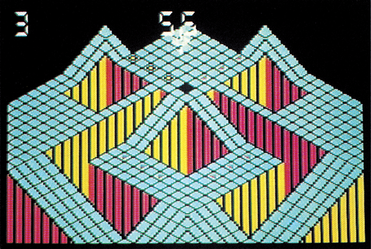
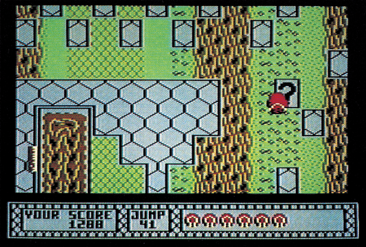

Geschickter Joystick
Die reinsten Geschicklichkeitstests sind »Bounder« und »Gyroscope«, die viel Bildschirmaktion ohne Ballerei bieten. Hier knirscht der Joystick!
Endlich mal wieder gibt es ein paar Spiele ohne krampfhaft erdachte Hintergrund-Story. Bei »Bounder« und »Gyroscope« gibt es einfache Aufgaben, die nicht in irgendwelche dümmlichen Science-fiction-Geschichten gepackt wurden. Die leicht surrealen und völlig unbegründeten Handlungen: Bei Bounder muß ein Ball über Plattformen in ein Ziel springen, bei Gyroscope ein Kreisel durch ein hügliges Terrain zum Ziel rollen. Mehr Handlung gibt es nicht, so daß sich die Programmierer auf die Umsetzung dieser Ideen konzentrieren konnten.
Beginnen wir mit »Gyroscope«, einem neuen Spiel von Melbourne House. Hier hat man offensichtlich versucht, sich an einen Spielhallenklassiker anzuhängen. Es handelt sich um »Marble Madness«, ein Automat von Atari-Goin-Op. Was dem einen die Murmel, ist dem anderen der Kreisel, der bei Gyroscope ins Ziel zu befördern ist. Der Weg dorthin wird in Zaxxon-artiger 3D-Grafik dargestellt. Der Kreisel rollt durch eine Welt aus »Badezimmerkacheln«, aus denen die verschiedensten Hindernisse geformt sind. Auf diesem dreidimensionalen Parcours sind aber noch weitere Hindernisse integriert: Magnete und schwarze Löcher beeinflussen den Weg des Kreisels und der Spieler muß höllisch aufpassen, daß sein Kreisel nicht gegen eine Wand oder über den Rand hinaus fährt. Zu allem Überfluß treiben sich noch einige andere Gestalten herum, deren einziger Lebenszweck es ist, den Kreisel aus dem Gleichgewicht zu bringen. Leider sind diese Monster rein zufallsgesteuert und tauchen relativ konzeptlos auf, so daß sie keine Herausforderung sondern bloße Schikane sind.
Insgesamt sechs Strecken sind zu durchkreiseln, jede von ihnen ist mindestens fünf Bildschirme lang und scrollt von unten nach oben durch. Diese können geschickte Spieler aber nach wenigen Tagen meistern. Danach meldet sich das Programm mit den englischen Sätzen: »Ha Ha, du hast es geschafft. Willst du es nochmal versuchen?«
Der Gesamteindruck von Gyroscope ist recht zwiespältig. Das Spiel ist zwar nicht schlecht, bietet aber auch nicht sehr viele Möglichkeiten. So vermißt man viele Details wie eine High-Score-Liste, oder Anwahl einzelner Spiele-Level. Außerdem wird es doch recht schnell langweilig. Aber innerhalb der nächsten Monate soll ja »Marble Madness« von Electronic Arts erscheinen, von dem sich Branchenkenner eine ganze Menge versprechen.

Ein weiterer, neuer Vertreter der Geschicklichkeitsspiele ist »Bounder«. Stellen Sie sich graue Plattformen vor, die in eintausend Meter Höhe überdem Erdboden schweben. Über diese Plattformen muß sich ein Tennisball springend zu einem Ziel bewegen. Auch hier erstrecken sich die einzelnen Strecken über mehrere Bildschirme, die von unten nach oben scrollen. Auf den Ball warten neben den möglichst wirr angeordneten Plattformen verschiedene Monster und fliegende Hindernisse sowie Überraschungsplattformen. Springt man auf eine solche Plattform, gibt es entweder einen Bonus oder es passiert etwas Unerwartetes — so kann beispielsweise ein Gebiß auftauchen, das unseren Tennisball zerfetzt.
Hat man eines der insgesamt zehn Teilziele erreicht, kommt der Spieler in eine Bonus-Runde, bei der mehrere Felder mit möglichst wenig Sprüngen berührt werden müssen. Da bei jedem Durchgang die Verteilung der Gegner, Plattformen und Bonus-Felder gleichbleibt, kann man sich mit sehr viel Übung nach und nach durch die zehn Spielstufen durchtasten. Bounder ist nämlich wirklich nicht einfach und verlangt dem Spieler einiges an Joystick-Geschick ab.
Bounder wurde mit viel Liebe zum Detail programmiert, man entdeckt immer wieder einige neue Feinheiten im Spiel. Zusammen mit dem hohen Schwierigkeitsgrad ergibt sich so eine hohe, langanhaltende Spielmotivation.

Die grafische Seite von Bounder verdient besondere Beachtung. Das Scrolling wurde sehr trickreich programmiert, so daß die grauen Plattformen ziemlich schnell, die darunterliegende Landschaft aber nur langsam nach unten durchrollt. Der 3D-Effekt wird dadurch perfektioniert, daß der Ball beim Hüpfen größer und kleiner wird. Die Musik ist ganz nett und entspricht voll dem Spielstil.
Bounder ist also eindeutig das bessere der beiden Geschicklichkeitsspiele. Außerdem bekommt man bei Bounder noch umsonst ein allerdings recht mäßiges Bonus-Spiel namens »Metabolis« mitgeliefert.
(bs)| Titel | Gyroscope |
|---|---|
| Spielidee | 10/15 |
| Grafik | 10/15 |
| Sound | 8/15 |
| Schwierigkeit | 10/15 |
| Motivation | 9/15 |
| Besonderheiten | wenig Abwechslung |
| Hersteller | Melbourne House |
| Preis | 39 Mark (K) |
| Bezugsquelle | Rushware An der Gümpgesbrücke 24 4044 Kaarst 2 |
| Titel | Bounder |
|---|---|
| Spielidee | 12/15 |
| Grafik | 11/15 |
| Sound | 10/15 |
| Schwierigkeit | 13/15 |
| Motivation | 13/15 |
| Besonderheiten | tolles, zweistufiges Scrolling |
| Hersteller | Gremlin Graphics |
| Preis | 32 Mark (K) |
| Bezugsquelle | Rushware An der Gümpgesbrücke 24 4044 Kaarst 2 |